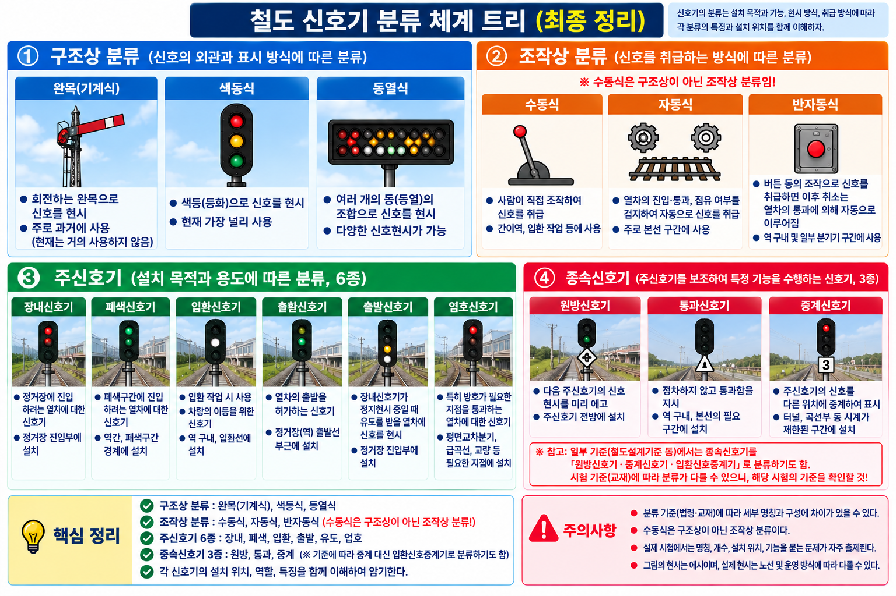
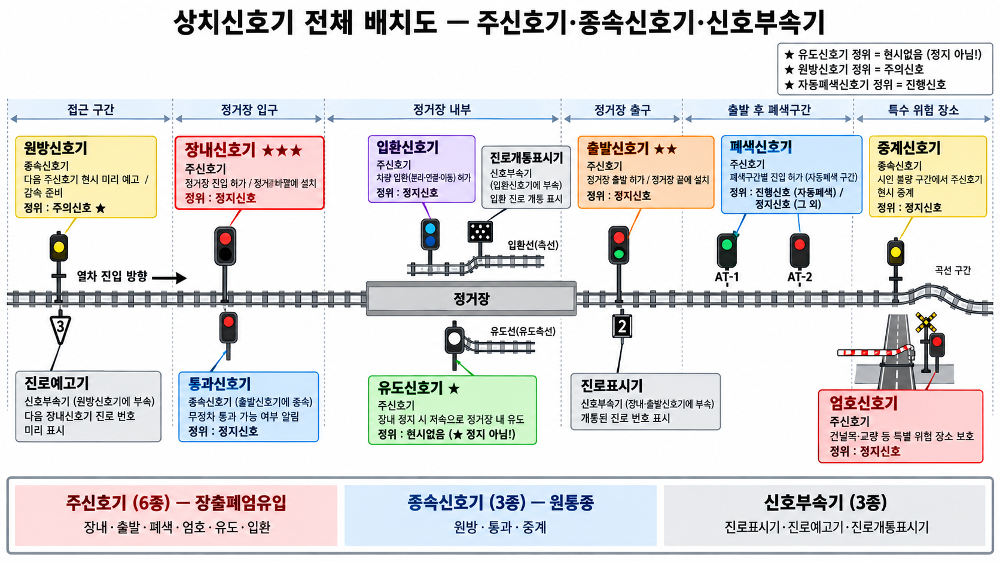
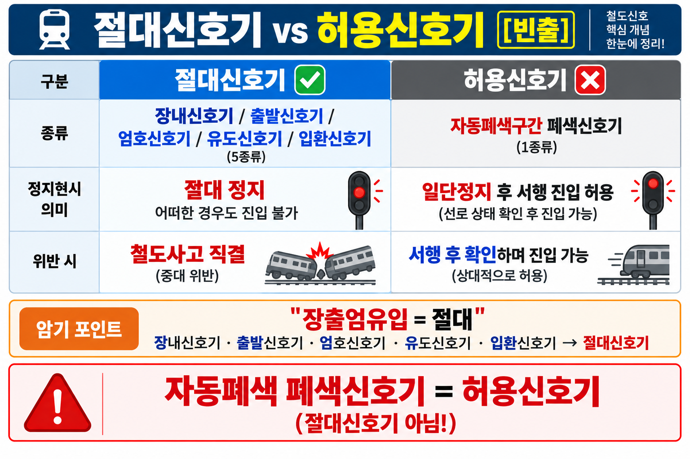
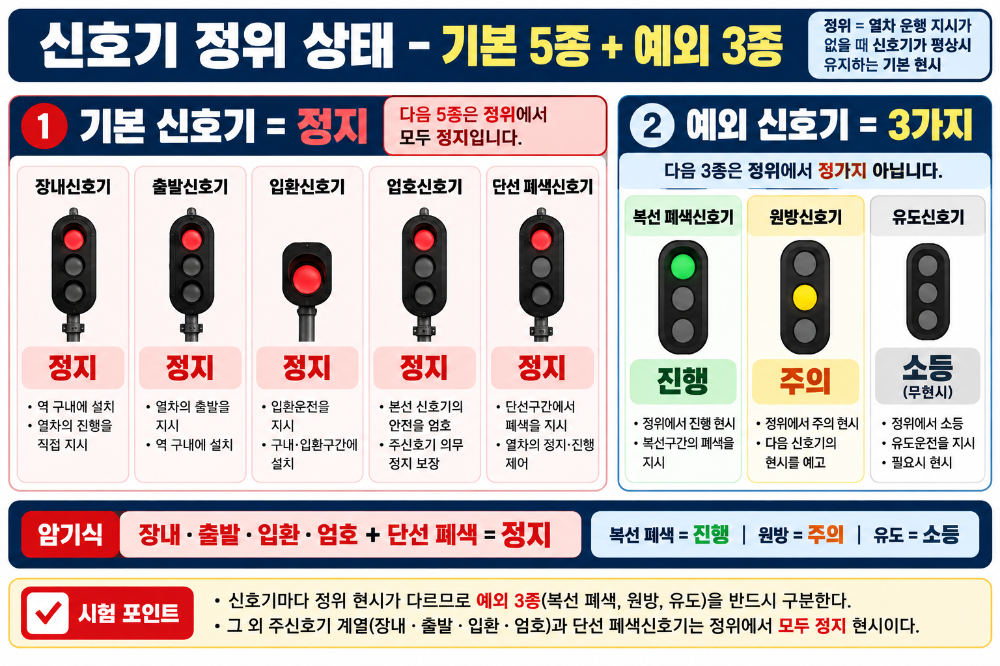
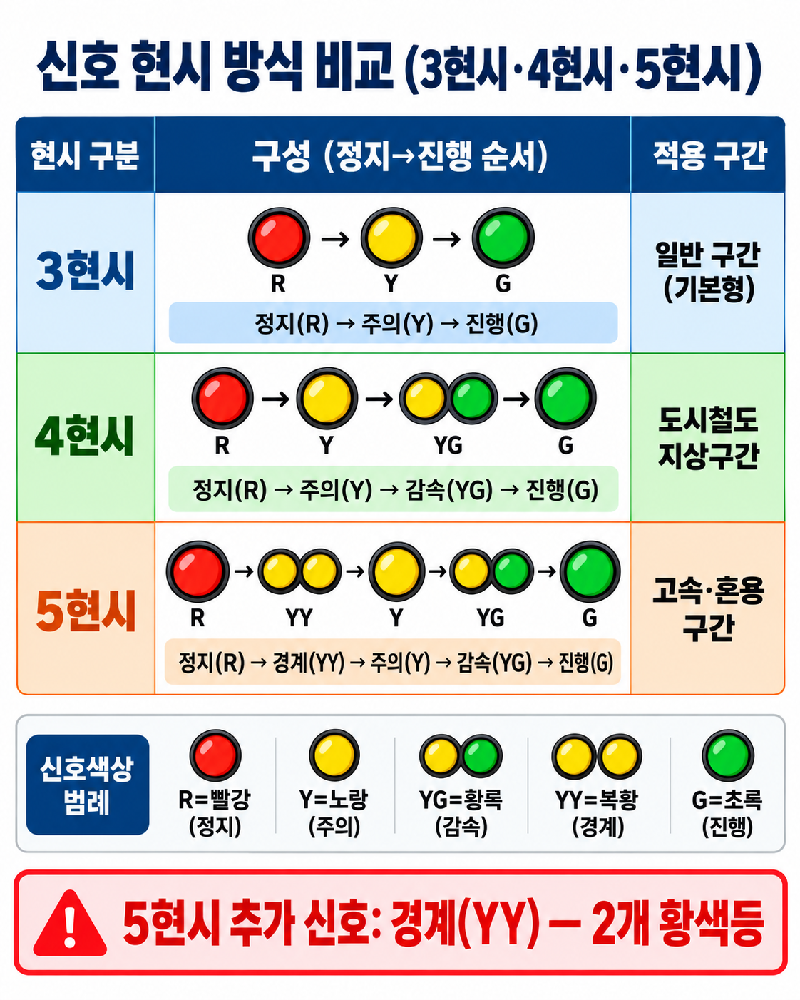

07-01 신호기 분류·현시 — 구조상·조작상·기능별·정위·확인거리·특수신호
§ 0. 이 단원에서 반드시 먼저 알아야 할 용어
현시(現示)
신호기가 기관사에게 지금 상태를 눈으로 보여주는 것. 색등·완목 위치·등의 배열로 "정지·주의·진행" 등의 운전 지시를 전달하는 행위.
정위(定位)
신호기가 평상시 기본으로 유지하는 상태. 열차 운행 지시가 없을 때 자동으로 취하는 위치. 시험에서 3가지 예외(복선폐색=진행, 원방=주의, 유도=소등)가 핵심.
확인거리
기관사가 신호기의 현시를 확인할 수 있어야 하는 최소 거리. 제동 여유 확보를 위해 규정. 주요 신호기 600m, 입환·중계 200m, 유도 100m, 장내 대향 100m·배향 60m.
절대신호기 vs 허용신호기
절대신호기: 정지 현시 시 어떠한 경우에도 열차 진입 불가. 허용신호기: 정지 현시라도 일단정지 후 서행 진입 허용. 자동폐색 폐색신호기만 허용신호기.
§ 1. 신호기 구조상 분류 3종

신호기 분류 체계 트리 (VIS-029)
01구조상 분류 3종
| 종류 | 현시 방법 | 특징 |
|---|---|---|
| 완목식 신호기 | 주간=완목 위치·형태 / 야간=등색 | 주야간 현시방법 다름 ★ |
| 색등식 신호기 | 색등(적·황·녹)으로 현시 | 주야간 동일. 현재 가장 많이 사용 |
| 등열식 신호기 | 2개 이상 백색등 배열 패턴으로 현시 | 유도·중계신호기에 사용 |
⚠️ 함정: 완목식만 주야간 현시방법이 다름 — 색등식·등열식은 주야간 동일
이론 배경: 완목식은 낮에 완목(막대기) 각도·형태로, 밤에는 색등으로 표시하므로 주야간이 다르다. 색등식은 낮밤 구분 없이 항상 색등으로 표시하며 현재 가장 널리 사용된다. 등열식은 여러 흰색 등의 배열 패턴으로 신호를 표시하며 유도신호기·중계신호기 전용이다.
기출 예시
Q. 주야간 현시 방법이 서로 다른 신호기는?
정답: 완목식 신호기
오답함정: 색등식 — 색등식은 주야간 동일하게 색등으로 현시
§ 2. 신호기 조작상 분류 3종
02조작상 분류 3종
| 종류 | 작동 방식 | 주요 적용 신호기 |
|---|---|---|
| 수동신호기 | 신호취급자가 레버 직접 조작 | 비자동구간 |
| 자동신호기 | 궤도회로로 자동 현시 / 취급자 조작 불가 | 자동폐색구간 폐색신호기 |
| 반자동신호기 | 자동현시 기본 + 취급자 조작 가능 | 자동폐색구간 장내·출발신호기 |
⚠️ 함정: 폐색신호기 = 자동 / 장내·출발 = 반자동 (혼동 주의)
이론 배경: 자동신호기는 궤도회로가 열차의 유무를 감지하여 자동으로 현시를 바꾸므로 취급자가 조작할 수 없다. 반자동신호기는 자동현시가 기본이지만 역장 등이 필요 시 직접 조작할 수도 있다.
기출 예시
Q. 자동폐색구간 폐색신호기의 조작상 분류는?
정답: 자동신호기
오답함정: 반자동신호기 — 반자동신호기는 장내·출발신호기에 해당
§ 3. 신호기 기능별 분류 — 주신호기 6종

상치신호기 전체 배치도 (VIS-091) — 주신호기·종속신호기·신호부속기 위치 관계
03주신호기 6종 — 「장출폐엄유입」
| 종류 | 기능 | 설치 위치 |
|---|---|---|
| 장내신호기 | 정거장 구내 진입 가부 지시 | 정거장 진입 전방 (확인거리: 대향 100m / 배향 60m) |
| 출발신호기 | 정거장 출발 가부 지시 | 출발선 시점(역 끝) |
| 폐색신호기 | 폐색구간 진입 가부 지시 | 폐색구간 시작점 |
| 엄호신호기 | 평면교차분기·특수시설 통과 열차 진입 가부 | 특수지점 앞 |
| 유도신호기 | 장내신호기 정지 시에도 예외 진입 허용 | 장내신호기에 부속 |
| 입환신호기 | 입환차량 진입 가부 | 입환 구역 |
★ 암기법: 「장출폐엄유입」 — 장내·출발·폐색·엄호·유도·입환
★ 유도신호기 정위 = 소등(무현시) — 평상시 꺼져 있음 (정지 아님!) ★
이론 배경: 주신호기 6종 역할: 장내=역 진입, 출발=역 출발, 폐색=구간 경계, 엄호=특수지점 보호, 유도=예외 진입 허용(정위=소등), 입환=입환 작업. 폐색신호기는 복선에서 정위=진행, 단선에서 정위=정지.
기출 예시
Q. 장내신호기가 정지를 현시하고 있을 때에도 예외적으로 진입을 허용할 수 있는 신호기는?
정답: 유도신호기
오답함정: 폐색신호기 — 폐색신호기는 구간 경계 신호기, 예외 진입 허용 기능 없음

§ 4. 기능별 분류 — 종속신호기 3종 · 임시신호기 3종
04종속신호기 3종 — 「원통중」
| 종류 | 기능 | 특징 |
|---|---|---|
| 원방신호기 | 장내신호기 현시 예고 | 비자동구간 / 정위=주의 |
| 통과신호기 | 기계식 장내신호기 하단에서 통과 여부 지시 | 기계식에만 사용 |
| 중계신호기 | 주신호기 현시상태 예고·중계 | 등열식 사용 / 곡선·터널부 |
⚠️ 함정: 중계신호기 = 종속신호기 (주신호기 아님, 임시신호기도 아님) ★★
이론 배경: 종속신호기는 주신호기에 종속되어 예고·중계 역할만 하며 열차를 독립적으로 제어하지 않는다. 중계신호기는 곡선·터널 등 시야가 제한된 구간에서 주신호기 현시를 중계한다.
기출 예시
Q. 중계신호기는 어느 분류에 속하는가?
정답: 종속신호기
오답함정: 임시신호기 — 임시신호기는 서행예고·서행·서행해제 3종
05임시신호기 3종 ★ 비해당 자주 출제
서행예고신호기 / 서행신호기 / 서행해제신호기
⚠️ 함정: 중계신호기는 임시신호기가 아님 — 종속신호기임 ★★
★ 임시신호기 비해당 = 중계신호기 — 매 회 출제
이론 배경: 임시신호기는 공사·장애 등 임시 상황에서 서행 구간을 표시하는 3종(서행예고·서행·서행해제)으로만 구성. 중계신호기는 종속신호기이므로 임시신호기 비해당으로 매회 출제된다.
기출 예시
Q. 임시신호기에 해당하지 않는 것은?
정답: 중계신호기 (임시신호기 3종: 서행예고·서행·서행해제)
오답함정: 서행신호기 — 서행신호기는 임시신호기 3종 중 하나
06신호부속기 3종
| 부속기 | 부속 대상 | 기능 |
|---|---|---|
| 진로표시기 | 장내·출발·입환신호기 | 개통된 진로 번호 표시 |
| 진로예고기 | 원방신호기 | 다음 장내신호기 진로 번호 미리 표시 |
| 진로개통표시기 | 입환신호기 | 입환 진로 개통 표시 |
진로표시기 종류: 진로 수 3개 이하=등렬식 / 4개 이상=문자식
§ 5. 절대신호기 vs 허용신호기

절대신호기 vs 허용신호기 비교 (VIS-088)
07절대/허용신호기 구분
| 구분 | 해당 신호기 | 정지 현시 시 |
|---|---|---|
| 절대신호기 | 장내·출발·엄호·유도·입환 (5종) | 절대 정지 (어떠한 경우도 진입 불가) |
| 허용신호기 | 자동폐색구간 폐색신호기 (1종) | 일단정지 후 서행 진입 허용 |
★ 암기법: 「장출엄유입 = 절대」 — 폐색신호기만 허용신호기
⚠️ 함정: 자동폐색 폐색신호기 = 절대신호기 → ❌ 허용신호기
⚠️ 함정: 유도신호기·입환신호기 = 허용신호기 → ❌ 절대신호기
⚠️ 함정: 중계신호기 = 절대신호기 → ❌ 중계신호기는 종속신호기
이론 배경: 절대신호기는 정지현시 시 어떠한 경우에도 열차 진입이 불가합니다. 장내·출발·엄호·유도·입환신호기 5종이 해당합니다. 반면 자동폐색구간 폐색신호기는 허용신호기로, 정지현시라도 일단정지 후 서행으로 진입할 수 있습니다. 유도신호기와 입환신호기가 절대신호기에 해당한다는 점이 자주 출제됩니다.
기출 예시
Q. 자동폐색구간 폐색신호기는 절대신호기인가, 허용신호기인가?
정답: 허용신호기 (일단정지 후 서행 가능)
오답함정: 절대신호기 — 장내·출발·엄호·유도·입환신호기가 절대신호기
§ 6. 신호기 정위 암기표 ★ 핵심

신호기 정위 암기카드 (VIS-039 FINAL)
08신호기별 정위 상태
| 신호기 | 정위 상태 | 주의 |
|---|---|---|
| 장내·출발·입환·엄호 | 정지 | 기본 4종 |
| 유도신호기 | 소등(무현시) | 정지 아님! ★ |
| 복선 폐색신호기 | 진행 | 단선은 정지 ★ |
| 단선 폐색신호기 | 정지 | |
| 원방신호기 | 주의 | 진행·정지 아님! ★ |
⚠️ 유도신호기 정위 = '정지' → ❌ 소등(무현시)
⚠️ 원방신호기 정위 = '정지' → ❌ 주의
⚠️ 복선 폐색신호기 정위 = '정지' → ❌ 진행
이론 배경: 정위는 평상시 신호기의 기본 상태다. 3가지 예외를 반드시 암기: 복선 폐색신호기=진행(열차 없으면 진행 가능), 원방신호기=주의(장내신호기 예고), 유도신호기=소등(평상시 꺼져 있다가 예외 진입 시에만 점등). 이 3가지 예외가 시험 핵심.
기출 예시
Q. 원방신호기의 정위 상태는?
정답: 주의
오답함정: 정지 또는 진행 — 원방신호기는 장내신호기를 예고하므로 주의가 정위
§ 7. 신호기 확인거리
09신호기별 확인거리 (6.html PART 4 개념10 원문 기준)
| 신호기 종류 | 확인거리 | 비고 |
|---|---|---|
| 장내·출발·폐색·엄호신호기 | 600m 이상 | ★ |
| 입환·중계신호기 / 주신호용 진로표시기 | 200m 이상 | |
| 유도신호기 / 입환신호용 진로표시기 | 100m 이상 | |
| 장내신호기 대향 방향 | 100m 이상 | |
| 장내신호기 배향 방향 | 60m 이상 | ★ |
이론 배경: 확인거리는 기관사가 제동에 필요한 시간을 벌 수 있도록 신호기를 충분히 먼 거리에서 확인하도록 규정한 최소 거리.
① 장내·출발·폐색·엄호 → 600m ② 입환·중계·주신호용 진로표시기 → 200m ③ 유도·입환신호용 진로표시기 → 100m
④ 장내신호기 대향(열차가 신호기를 정면으로 바라보는 방향) → 100m
⑤ 장내신호기 배향(신호기 등을 뒤에서 바라보는 방향) → 60m
※ 장내신호기의 600m는 일반 기준이고, 대향·배향은 방향에 따른 별도 규정(특수 수치)이다.
① 장내·출발·폐색·엄호 → 600m ② 입환·중계·주신호용 진로표시기 → 200m ③ 유도·입환신호용 진로표시기 → 100m
④ 장내신호기 대향(열차가 신호기를 정면으로 바라보는 방향) → 100m
⑤ 장내신호기 배향(신호기 등을 뒤에서 바라보는 방향) → 60m
※ 장내신호기의 600m는 일반 기준이고, 대향·배향은 방향에 따른 별도 규정(특수 수치)이다.
⚠️ 함정: 장내신호기 '배향 = 600m' → ❌ 배향은 60m, 대향은 100m
⚠️ 함정: 입환신호기 = 600m → ❌ 입환은 200m
⚠️ 함정: 유도신호기 = 600m → ❌ 유도는 100m
기출 예시
Q. 장내신호기 배향 방향 확인거리는?
정답: 60m 이상
오답함정: 600m — 600m는 장내신호기 일반 확인거리 기준. 배향=60m, 대향=100m
§ 8. 특수신호 3종
10특수신호 3종 ★
| 종류 | 방법 |
|---|---|
| 발뢰신호 | 레일에 설치 → 차륜이 밟으면 뇌관 폭발 |
| 발염신호 | 신호염관의 적색화염 |
| 발광신호 | 특수신호 발광기에 의한 적색등 움직임 |
⚠️ 함정: 발폭신호 → 존재하지 않음 (비해당 답으로 자주 출제) ★
이론 배경: 특수신호는 비상 상황에서 전방 열차에 위험을 알리는 비상 신호. 발뢰(뇌관 폭발)·발염(적색화염)·발광(적색등 움직임) 3종만 존재. '발폭신호'는 규정에 없는 허구 항목으로 매 회 비해당 답으로 출제된다.
기출 예시
Q. 특수신호의 종류에 해당하지 않는 것은?
정답: 발폭신호 (존재하지 않음)
오답함정: 발뢰신호 — 발뢰신호는 특수신호 3종 중 하나
§ 9. 보충 — 신호 현시 구분 (3현시·4현시·5현시)

신호 현시 방식 비교 (VIS-085)
11현시 구분 비교
| 현시 | 구성 (정지→진행 순서) | 적용 구간 |
|---|---|---|
| 3현시 | 정지(R) · 주의(Y) · 진행(G) | 일반 구간 (기본형) |
| 4현시 | 정지(R) · 주의(Y) · 감속(YG) · 진행(G) | 도시철도 지상구간 |
| 5현시 | 정지(R) · 경계(YY) · 주의(Y) · 감속(YG) · 진행(G) | 고속·혼용 구간 |
⚠️ 함정: "4현시에 경계현시 있음" → 경계(YY)는 5현시에만 있음
⚠️ 함정: "5현시 순서 = 정지·주의·경계·감속·진행" → 정지·경계·주의·감속·진행 (경계가 주의 앞)
§ 10. 기출 문제 (16문항) — 정답은 § 11 참조
■ Q01 | sig_241 | 주신호기 분류 | 등급 S
다음 중 「주신호기」에 해당하지 않는 것은?
① 장내신호기
② 원방신호기
③ 유도신호기
④ 입환신호기
■ Q02 | sig_242 | 장내신호기 정의 | 등급 S
정거장 구내로 진입하는 열차에 진입 가부를 지시하는 신호기는?
① 출발신호기
② 폐색신호기
③ 장내신호기
④ 엄호신호기
■ Q03 | sig_243 | 유도신호기 | 등급 S
장내신호기가 정지를 현시하고 있을 때에도 예외적으로 진입을 허용할 수 있는 신호기는?
① 폐색신호기
② 원방신호기
③ 유도신호기
④ 중계신호기
■ Q04 | sig_244 | 입환신호기 | 등급 A+
입환차량의 진입 가부를 지시하는 주신호기는?
① 엄호신호기
② 입환신호기
③ 장내신호기
④ 유도신호기
■ Q05 | sig_245 | 엄호신호기 | 등급 A+
평면교차분기 등 특수시설을 통과하는 열차의 진입 가부를 지시하는 신호기는?
① 유도신호기
② 장내신호기
③ 엄호신호기
④ 폐색신호기
■ Q06 | sig_246 | 정위 복합 | 등급 S
다음 중 신호기 정위(평상시 기본 상태)에 대한 설명으로 옳은 것은?
① 복선 자동폐색구간 폐색신호기 정위는 정지이다
② 원방신호기 정위는 진행이다
③ 유도신호기 정위는 소등(무현시)이다
④ 장내신호기 정위는 진행이다
■ Q07 | sig_247 | 원방신호기 정위 | 등급 S
원방신호기의 정위 상태는?
① 진행
② 주의
③ 정지
④ 소등(무현시)
■ Q08 | sig_248 | 복선폐색 정위 | 등급 S
복선 자동폐색구간 폐색신호기의 정위 상태는?
① 주의
② 정지
③ 진행
④ 소등
■ Q09 | sig_249 | 임시신호기 비해당 | 등급 A+
다음 중 「임시신호기」에 해당하지 않는 것은?
① 서행예고신호기
② 서행신호기
③ 중계신호기
④ 서행해제신호기
■ Q10 | sig_250 | 종속신호기 비해당 | 등급 A+
주신호기의 현시 상태를 예고·중계하는 종속신호기에 해당하지 않는 것은?
① 원방신호기
② 서행신호기
③ 중계신호기
④ 통과신호기
■ Q11 | sig_251 | 확인거리 600m | 등급 S
장내·출발·폐색·엄호신호기의 확인거리 기준은?
① 100m 이상
② 200m 이상
③ 400m 이상
④ 600m 이상
■ Q12 | sig_252 | 유도신호기 확인거리 | 등급 A+
유도신호기의 확인거리 기준은?
① 600m 이상
② 400m 이상
③ 200m 이상
④ 100m 이상
■ Q13 | sig_253 | 배향 확인거리 | 등급 A+
장내신호기의 배향 방향 확인거리 기준은?
① 600m 이상
② 200m 이상
③ 100m 이상
④ 60m 이상
■ Q14 | sig_254 | 특수신호 비해당 | 등급 A+
다음 중 특수신호의 종류에 해당하지 않는 것은?
① 발뢰신호
② 발염신호
③ 발폭신호
④ 발광신호
■ Q15 | sig_255 | 허용신호기 처리 | 등급 A+
자동폐색구간 폐색신호기의 정지 현시 시 처리 방법으로 옳은 것은?
① 절대 정지 — 어떠한 경우에도 진행 불가
② 관제사 허가 후 진행 가능
③ 일단정지 후 서행 진행 가능
④ 다음 신호기까지 25km/h로 진행
■ Q16 | rk_ch82_05 | 절대신호기 비해당 | 철도왕 교재
절대신호기에 해당되지 않는 것은?
① 입환신호기
② 폐색신호기
③ 엄호신호기
④ 출발신호기
§ 11. 정답 및 해설
▶ 정답 일람
Q01 ②
Q02 ③
Q03 ③
Q04 ②
Q05 ③
Q06 ③
Q07 ②
Q08 ③
Q09 ③
Q10 ②
Q11 ④
Q12 ④
Q13 ④
Q14 ③
Q15 ③
Q16 ②
Q01 | sig_241 | 주신호기 비해당
정답: ② 원방신호기
주신호기 6종: 장내·출발·폐색·엄호·유도·입환신호기. 원방신호기는 종속신호기(장내신호기 현시 예고 역할).
함정: ③유도신호기는 '유도'라는 이름 때문에 주신호기 아닌 것처럼 느껴지지만 주신호기 6종에 포함됨.
Q02 | sig_242 | 장내신호기 정의
정답: ③ 장내신호기
장내신호기: 정거장 구내로 진입하는 열차에 진입 가부 지시. 정거장 진입 전방에 설치.
함정: ①출발신호기는 정거장 출발 가부 지시(방향 반대).
Q03 | sig_243 | 유도신호기
정답: ③ 유도신호기
유도신호기: 장내신호기 정지 현시 중에도 예외적으로 진입을 허용. 정위=소등(무현시)이며, 필요 시에만 점등.
함정: ④중계신호기는 종속신호기로 예외 진입 허용 기능 없음.
Q04 | sig_244 | 입환신호기
정답: ② 입환신호기
입환신호기: 입환차량(차량 이동 작업)의 진입 가부 지시. 주신호기 6종에 포함.
함정: ①엄호신호기는 평면교차분기·특수시설 통과 열차 진입 가부 지시(다른 역할).
Q05 | sig_245 | 엄호신호기
정답: ③ 엄호신호기
엄호신호기: 평면교차분기·특수시설 등 특수지점을 통과하는 열차의 진입 가부 지시. 특수지점 앞에 설치.
함정: ②장내신호기는 정거장 구내 진입 가부(일반 역 진입).
Q06 | sig_246 | 정위 복합
정답: ③ 유도신호기 정위는 소등(무현시)이다
정위 3대 예외: 복선 폐색신호기=진행, 원방신호기=주의, 유도신호기=소등(무현시).
①복선 폐색=진행(정지 아님), ②원방=주의(진행 아님), ④장내=정지(진행 아님).
Q07 | sig_247 | 원방신호기 정위
정답: ② 주의
원방신호기는 장내신호기 현시를 예고하므로, 정위는 '주의'(경계 태세). 정지나 진행이 아님.
함정: '정지'로 교체하거나 '진행'으로 교체하는 함정이 빈출.
Q08 | sig_248 | 복선폐색 정위
정답: ③ 진행
복선 자동폐색구간 폐색신호기는 열차가 없으면 진행 가능하므로 정위=진행. 단선 폐색신호기=정지.
함정: 복선/단선 교체 함정. 단선=정지, 복선=진행.
Q09 | sig_249 | 임시신호기 비해당
정답: ③ 중계신호기
임시신호기 3종: 서행예고·서행·서행해제신호기. 중계신호기는 종속신호기(주신호기 현시 중계 역할).
함정: 중계신호기가 '중계'한다는 이름 때문에 임시신호기처럼 보이지만 종속신호기임.
Q10 | sig_250 | 종속신호기 비해당
정답: ② 서행신호기
종속신호기 3종: 원방·통과·중계신호기. 서행신호기는 임시신호기(서행 구간 표시).
함정: 종속신호기=「원통중」, 임시신호기=「서행예고·서행·서행해제」 분리 암기 필수.
Q11 | sig_251 | 확인거리 600m
정답: ④ 600m 이상
장내·출발·폐색·엄호신호기 확인거리=600m 이상. 이 4종이 대표 주신호기 일반 확인거리.
함정: 입환=200m, 유도=100m 혼동 금지.
Q12 | sig_252 | 유도신호기 확인거리
정답: ④ 100m 이상
유도신호기 확인거리=100m 이상. 입환신호기·중계신호기는 200m 이상.
함정: 유도신호기를 주신호기이므로 600m로 혼동 — 별도 100m 규정 적용.
Q13 | sig_253 | 배향 확인거리
정답: ④ 60m 이상
장내신호기 배향(신호기 등을 뒤에서 보는 방향)=60m 이상. 대향=100m 이상. 일반 확인거리(600m)와 구분 필수.
함정: 장내신호기이므로 600m→대향 100m→배향 60m 3단계 구분.
Q14 | sig_254 | 특수신호 비해당
정답: ③ 발폭신호
특수신호 3종: 발뢰(뇌관)·발염(적색화염)·발광(적색등). '발폭신호'는 규정에 없는 항목.
함정: 발뢰·발염·발광 3종 중 어느 하나가 비해당처럼 보이도록 출제되지 않음 — 발폭이 답.
Q15 | sig_255 | 허용신호기 처리
정답: ③ 일단정지 후 서행 진행 가능
자동폐색 폐색신호기=허용신호기. 정지 현시 시 일단정지 후 선로 확인하며 서행 진입 허용.
함정: ①은 절대신호기(장내·출발·엄호·유도·입환)의 규칙. 폐색신호기는 허용신호기.
Q16 | rk_ch82_05 | 절대신호기 비해당
정답: ② 폐색신호기
절대신호기 5종: 장내·출발·엄호·유도·입환신호기. 자동폐색신호기는 허용신호기(일단정지 후 서행 가능).
함정: ①입환신호기·③엄호신호기·④출발신호기는 모두 절대신호기임.